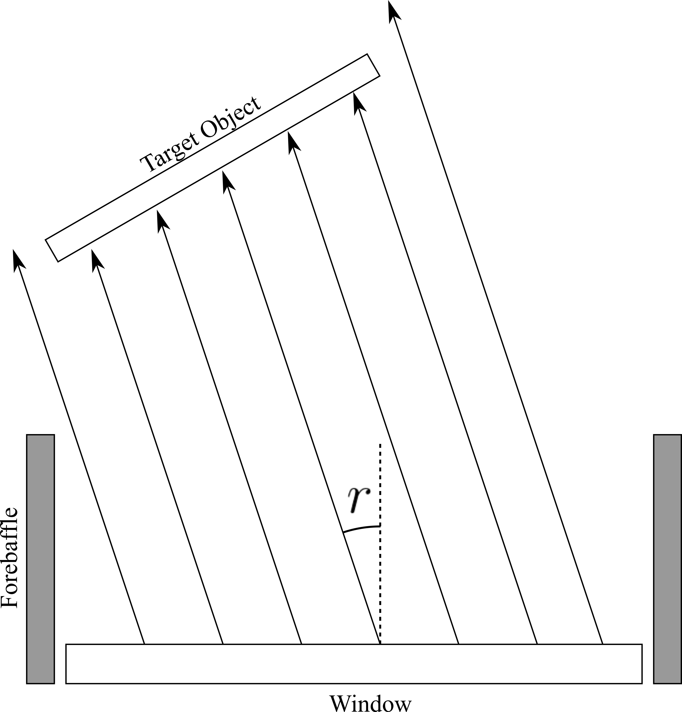

Optimizing FFFlat Mirror Positions using 3D Raytracing
—
J. Cornelison
In a previous posting, I developed a 3D raytracer for the use of optimizing radiation shielding configurations for CMB-S4 SATs. In this posting, I present an additional function of the raytracer which, for an arbitrary object, determines the fractional coupling of the collimated bundle of rays corresponding to a position on the focal plane emitted from the telescope window. Using this new function, I probe a range of mirror positions to optimize the total number of pixels that totally couple with the mirror during a calibration schedule.
Calculating Fractional Coupling
I've added an additional functionality to my raytracing code to determine the fraction of the collimated ray bundle for a given detector that is incident on a target object. As is shown in the illustration below, the code works by producing a grid of rays on the window in a given direction corresponding to an r-$\theta$ (or x-y) position on the focal plane. Then it calculates the ratio of intersecting rays to total rays emitted. This ratio is calculated for a grid of positions on the focal plane for any given mirror position.

Functional diagram of the raytracing code. A column of rays for a single pixel on a focal plane are projected out of a window and either intersecting or passing a target object.
Consistency Checks with Keck Beam Mapping Data
To verify the accuracy of the code, I calculated the subtended fraction for a grid of points using Keck mount, mirror, and focal plane parameters as input which, in the figure below, I compare to mirror mask calculations shown in Figure 2 of . I find that, qualitatively, the predictions made by the raytracer match nicely to the calculated projections of the mirror onto the focal plane.
(Left) Plot of fraction of rays which intersect the mirror as a function of location on the focal plane. (Right) Beam amplitudes for RX0 overlayed with a projection of the mirror onto the focal plane for masking purposes.
Optimizing Mirror Positions
For any given pixel, we require that the collimated beam couples completely with the mirror as we see significant degradation of the beams with a little as 0.5% of beam fall off (see ). Ideally, we'd want to converge on a single position that accomplished this as adjusting the mirror is difficult and time-consuming. Additionally, we want each pixel covered at multiple Deck angles to identify and suppress rotation-dependent systematics.
Setup
The raytracing code takes most of the same inputs used by our pointing model code (keck_beam_map_pointing.m) to define the mount geometry and aperture positions. All of the inputs for the mount were acquired from "As-Built" SOLIDWorks models located in the SVN. The diagram in Fig. 3.1 shows an example setup of the BICEP Array geometry. The RX numbers were for differentiation purposes only in the code and are not representitive on our actual identification scheme. Since we're retrofitting the Keck mirror onto the BA mount, the positions of the carbon fiber struts limit the positions of the mirror toward 'back' positions only. Thus, in the figure below, the distance from the theta axis in the direction of decreasing elevation.
Example diagram of the BA receiver layout looking down into the mount with mirror projection overlaid.
I manually picked a mirror position by producing coverage maps like those in Fig. 2.1 over multiple mirror positions and also by looking at the number of times a pixel fully sees the mirrorover all drum positions. As can be seen in the pager below, there is no position of the mirror at which all detectors at some Deck angle can fully see the mirror; Pixels in the $+x$ quadrants can be hit by moving the mirror farther away, but this creates a "dead spot" in the $-x$ quadrants. Thus, I instead found the position at which not only had hits for more than half the focal plane at multiple Deck angles but also minimized the dead spots. For the "drum" positions seen in Fig. 2.1, I chose 8 Deck positions spanning from 0-360° in 45° increments. If we wanted hit more pixels above 10° in $x$ we could increase the number of drum positions with smaller increments. The manually chosen position of $0.61\text{m}$ is shown below.
[Fractional Cvg.]Plot of fraction of rays which intersect the mirror as a function of location on the focal plane. [Unique Hits] Plot of the number of unique positions at which the collimated beam for a given position on the focal plane is completely coupled to the mirror out of a total of 8 Deck positions spanning from 0-360° in 45° increments.